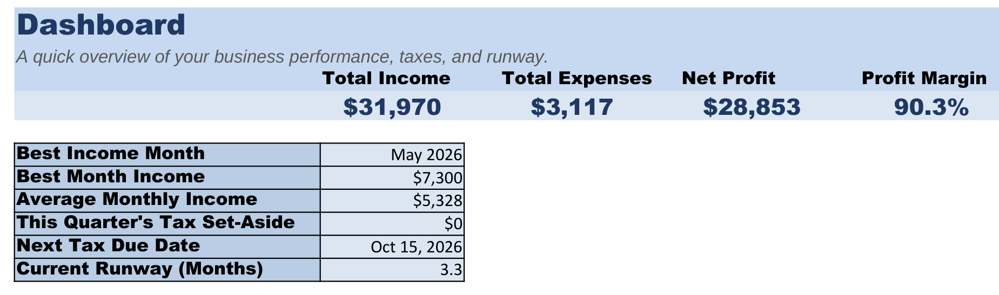
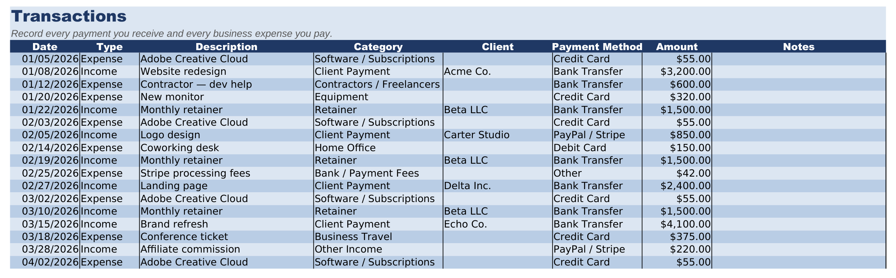

Calculate your tax set-aside and see how many months you could survive without another client—then track it automatically with The Freelance CFO.
Get an instant estimate of what to set aside for taxes.
🔒 Runs entirely in your browser — nothing you enter is sent or stored.
About This Tax Set-Aside Calculator
Freelance income doesn't have taxes withheld the way a paycheck does, which is why so many freelancers get blindsided at tax time. This calculator gives you a simple, consistent percentage to set aside every time you get paid.
The rule of thumb here is intentionally simple rather than precise — it's meant to be a number you can act on immediately, not a substitute for a real tax projection from an accountant who knows your bracket, state, and deductions.
Business expenses reduce the profit this tax is calculated on, which is why tracking them consistently (software, home office, a portion of internet, mileage) matters even for freelancers who hate bookkeeping — every dollar of legitimate expense is a dollar that isn't taxed.
The habit that actually works: move your set-aside percentage to a separate savings account the same day a client payment clears. If you never see the money as spendable, you'll never be tempted to spend it.
See how many months your savings would cover you with no income.
🔒 Runs entirely in your browser — nothing you enter is sent or stored.
The full amount you have saved right now — not a monthly figure.
About This Runway Calculator
Freelance income is inherently lumpy — a great quarter can be followed by a quiet one. Runway tells you, in plain months, how long your savings would cover you if new client work dried up completely.
This calculator uses your personal monthly expenses on purpose, not a hypothetical “business” budget — for most freelancers, the business and personal finances are the same pool of money, and that's the number that actually determines how much risk you can afford to take.
Runway is also a negotiating tool. A freelancer with six months of runway can afford to walk away from a lowball client or a scope-creeping project; a freelancer with three weeks often can't, and clients can sense the difference.
If your runway is shorter than you'd like, the fastest lever isn't always more income — trimming fixed monthly expenses even slightly extends runway immediately, without waiting on a new contract to land.
The Freelance CFO turns these one-time calculations into a year-round financial dashboard.


Track:
No. These calculators use a common rule of thumb (25-30% of net profit) for planning purposes only. Always confirm your actual tax obligations with a licensed tax professional.
Yes. It's a standard .xlsx file that opens and works fully in Excel, Google Sheets, and most other spreadsheet apps.
Yes — these calculators run entirely in your browser. Nothing you type here is sent anywhere or stored.
More Free Tools
Free calculators for other trades from Mundusflow.